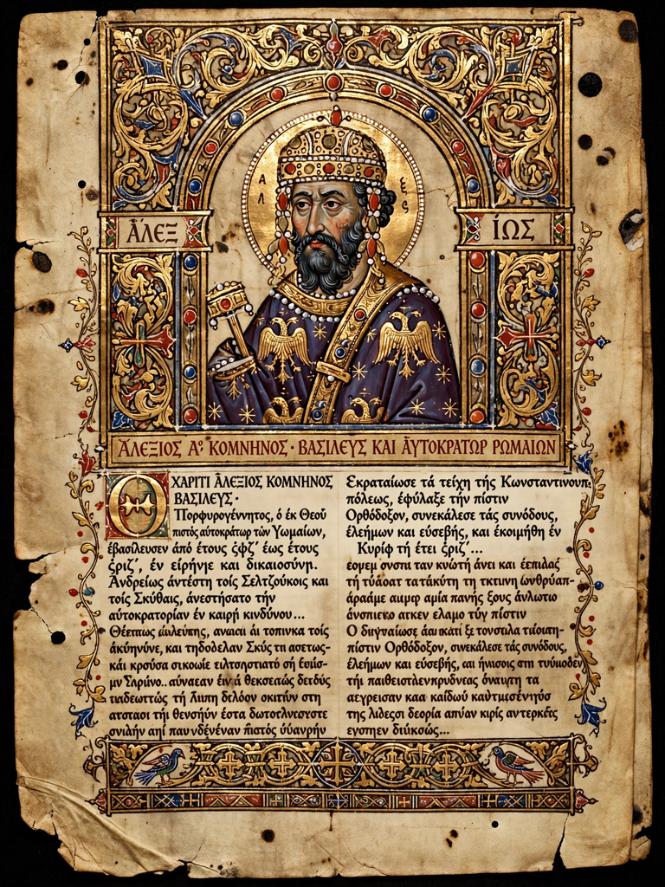

From Wikipedia, the free encyclopedia
| The Alexiad | |
| Author | Anna Komnene |
|---|---|
| Language | Medieval Greek (Atticising) |
| Subject | Reign of Emperor Alexios I Komnenos (1081–1118) |
| Composed | c. 1143–1153 |
| Books | 15 |

The Alexiad (Greek: Ἀλεξιάς, Alexias) is a medieval historical and biographical text written around the middle of the 12th century by the Byzantine princess and scholar Anna Komnene, daughter of Emperor Alexios I Komnenos. Written in an artificial, Atticising Greek deliberately modelled on Thucydides, Homer, and Polybius, it narrates her father's reign (1081–1118) and is the principal Byzantine source for the period — and one of the most important narrative sources for the First Crusade as seen from Constantinople.
The work comprises fifteen books. It begins with Alexios's rise through the military aristocracy under the emperors before him, his seizure of the throne in 1081, and the empire's desperate military situation. Anna recounts the Norman invasion of Robert Guiscard and his son Bohemond (1081–85), wars against the Pechenegs (culminating in the annihilating victory at Levounion in 1091) and the Seljuk Turks, court intrigues, heresy trials (including that of John Italos and the Bogomils, whose leader Basil was burned), and — in its most famous sections — the arrival of the First Crusade (1096–99): the unruly pilgrim bands under Peter the Hermit, the oaths sworn by the Crusader leaders to Alexios, and the growing Byzantine–Crusader estrangement over Antioch, which Bohemond kept for himself. The narrative ends with Alexios's death in 1118, closing with Anna's celebrated lament for her father and, later, her husband.
Anna (1083–c. 1153), born in the purple chamber of the palace, was among the most learned women of the medieval world, educated in Greek literature, philosophy, medicine, and mathematics. After a failed bid — associated with her mother Irene Doukaina and her husband Nikephoros Bryennios — to displace her brother John II at their father's death, she was forced into the convent of Kecharitomene, where she completed the history her husband had begun. The Alexiad is openly partial: it is a panegyric of Alexios as the saviour of a collapsing empire, and its portraits of Latins — brave but arrogant, greedy, and perfidious, in Anna's eyes — shaped Western views of Byzantium as much as Byzantine views of the Crusaders. Even so, its detail on warfare, siegecraft, medicine, diplomacy, and court life is unrivalled for the period.
The Alexiad survives in a number of manuscripts; it was first printed in the West in the 16th–17th centuries and has been translated into many languages (English versions by E. R. A. Sewter, revised by Peter Frankopan). It stands as a landmark of medieval historiography and of women's writing — frequently described as the work of the first female historian.